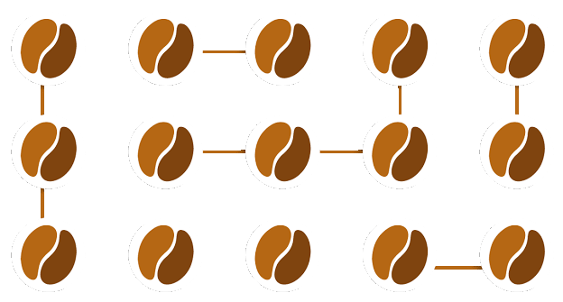

Bienvenue !
Pierre-Julien VILLOUD

L'injection de dépendances (DI)
C'est une implémentation de l'inversion de contrôle utilisée dans les langages orientés objet. Le principe est qu'au lieu de coder en dur les dépendances entre les composants, vous déléguez l'instantiation et la gestion de ces composants au framework qui les stockera dans son conteneur et pourra vous les fournir à la demande.

- Réduction au maximum des dépendances entre les composants logiciels
- Maintenance et évolutions plus maitrisées
- Utilisation possible d'implémentations différentes d'un composant sans tout modifier.
- Plus de gestion manuelle du cycle de vie des composants.
- Patterns de développement comme le singleton utilisables très facilement.
- Code plus facile à tester (mocks), à lire et à réutiliser.
- Ajout d'une dépendance à un framework potentiellement lourd ?
- Perte de contrôle ?
En réalité, l'injection de dépendances vous permet de vous concentrer sur votre cœur de métier et de produire du code de meilleure qualité !
Spring Core 
Spring Core est un des projets du framework Spring mais en est le socle. Ce framework implémente l'injection de dépendances. On appelle Core Container l'ensemble des modules suivants :
Beans
Core
Context
SpEL
Core et Beans sont les modules qui implémentent l'inversion de contrôle et l'injection de dépendences.
Context est une sorte de registre permettant de construire, stocker et injecter les différents composants de votre application.
SpEL ou Spring Expression Language permet de consulter et manipuler le graph d'objets à l'exécution.
On parle bien ici de conteneur, Spring est considéré comme un conteneur léger car il peut stocker n'importe quel type d'objets contrairement à des conteneurs lourds dont les objets doivent obligatoirement implémenter certaines interfaces (ex : serveurs d'application).
Les Beans
Les beans sont tout simplement les objets gérés par le conteneur Spring.


- Un bean doit être décrit dans une configuration de bean à fournir au conteneur Spring.
- Lorsqu'il y a des dépendances entre des beans, Spring lie ces derniers entre eux par injection.
- Les déclarations de beans permettent aux beans d'être instantiés, stockés, gérés et détruits par le conteneur Spring via l'
ApplicationContext.
Voyons maintenant chacune de ces notions.
Spring Boot 
Spring Boot est un module optionnel du framework Spring qui permet la création aisée d'application utilisant Spring afin de :
- Démarrer très rapidement le développement de votre application (notamment les applications web) sans être ralenti par des éléments de configuration
- Profiter de librairies tierces directement disponibles mais facilement désactivables ou remplaçables par l'ajout explicite de dépendances.
- Externaliser la configuration dans des fichiers de configurations (
.propertiesouYAML). - Avoir des fonctionnalités supplémentaires comme des serveurs intégrés, du monitoring, des vérifications au niveau de la santé et de la sécurité de votre application...
Pour démarrer un nouveau projet avec Spring Boot, il est recommandé d'utiliser
Spring Initializr.
Données d'exécution
Les données d'exécution des batchs (nom, date, paramètres, avancement...) sont stockées
en base de données.

Il est possible de faire générer automatiquement les tables nécessaires à Spring Batch
avec la clé
spring.batch.initialize-schema dans le fichier application.properties ou directement lors du lancement de l'application.